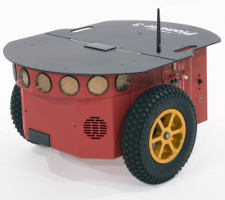

Robô Pioneer 3-DX

O robô disponível no laboratório é um Pioneer 3-DX, um robô móvel de tração diferencial, como o mostrado na imagem acima.
Arquitetura do Robô
O robô possui uma arquitetura de computação dupla:
- Microcontrolador (Aria): É o cérebro de "baixo nível". Ele roda um sistema operacional embarcado chamado Aria e é responsável pelo controle direto dos motores (rodas), obtenção da pose e leitura de sonares.
- Computador Interno: É o cérebro de "alto nível". É um computador rodando Ubuntu Server 12.04, que por sua vez possui o ROS1 (Hydro Medusa) instalado.
Por que ROS1 e não ROS2? A comunicação entre o ROS e o sistema Aria é feita por um pacote chamado
RosAria. Este pacote foi desenvolvido apenas para ROS1. Como esses robôs são considerados legados, não houve um esforço da comunidade para portar o driver para o ROS2.
Passo 1: Acessando o Computador do Robô
Para enviar comandos para o robô, você primeiro precisa se conectar ao computador interno dele. Existem duas formas principais de fazer isso.
Método 1: Via SSH (Recomendado)
SSH é um protocolo de rede que permite controlar um computador remotamente de forma segura.
- Garanta que seu computador e o robô estejam conectados à mesma rede Wi-Fi.
- Abra um terminal no seu computador e digite o seguinte comando (substitua pelo IP correto do robô, se necessário):
ssh root@192.168.1.100
- Será solicitada uma senha. A senha padrão do robô é:
Expertinos
Após isso, você estará dentro do terminal do computador do robô e pronto para o próximo passo.
Método 2: Acesso Físico (Via Terminal)
Você também pode conectar um monitor e um teclado diretamente nas portas do computador interno do robô. Esta é uma forma de acesso direto, útil se a rede Wi-Fi estiver com problemas.
Passo 2: Iniciando o Driver RosAria
Uma vez que você esteja dentro do terminal do robô (seja via SSH ou Acesso Físico), você pode iniciar o nó do ROS que faz a ponte com o microcontrolador.
Execute o seguinte comando no terminal do robô:
rosrun rosaria RosAria _port:=/dev/ttyS0 _baud:=9600
- O que esse comando faz? Ele inicia o driver
RosAria, que começa a escutar os comandos do ROS e a traduzi-los para o microcontrolador (Aria) através da porta serial interna do robô, a/dev/ttyS0.
Alternativa: Controle por Computador Externo (Via USB)
Existe uma terceira forma de controlar o robô que ignora o computador interno dele.
Neste método, você conecta o seu próprio computador/notebook (que deve ter o ROS1 instalado) diretamente na porta serial do robô, usando um conversor Serial-USB.
- Conecte o cabo Serial-USB do robô à porta USB do seu computador.
- (Opcional) Você pode precisar dar permissão à porta USB:
sudo chmod a+rw /dev/ttyUSB0 - Execute o seguinte comando no terminal do seu computador:
rosrun rosaria RosAria _port:=/dev/ttyUSB0 _baud:=9600
Nota: Repare que a porta mudou. Em vez de
/dev/ttyS0(a porta serial interna do robô), estamos usando/dev/ttyUSB0, que representa a porta USB do seu computador onde o robô está conectado.